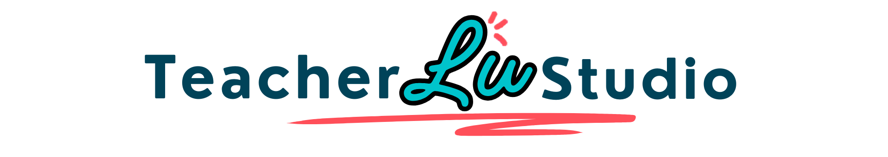

Pick a student, pick a duration, start the class.
Build the lesson →Themed lessons: questions, vocab and dialogues.
Open → GrammarExplanation, examples, mistakes and practice.
Open → StructuresPrepositions, articles, word order, questions.
Open → Listening30–45s audio + comprehension in one screen.
Open → SpeakingQuick visual games — the student talks right away.
Play → GamesEight games to liven up the lesson.
Play → PracticeComplete, choice, unscramble, story, dialogue, reading and speaking production.
Open →